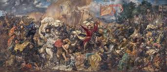
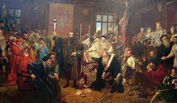
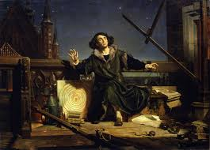
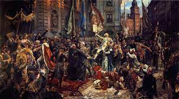

Co wyróżniało jego malarstwo?
Malarstwo Matejki, umiejscawiane wśród czołowych dzieł epoki dziewiętnastowiecznego historyzmu, charakteryzowały precyzja konturu, dbałość o szczegóły oraz starannie wygładzona powierzchnia malarska.


Bitwa pod Grunwaldem - 1872 roku Obraz olejny
Unia lubelska - 1869 roku Obraz olejny
 Astronom Kopernik, czyli rozmowa z Bogiem - 1871 roku Obraz olejny
Konstytucja 3 maja - 1891 roku Obraz olejny